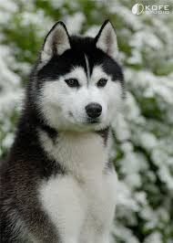
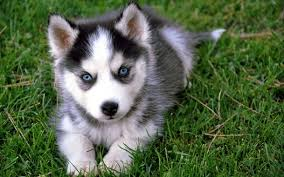

Східно сибірська лайка — порода російського походження. У непростих кліматичних умовах Сибіру і Далекого Сходу ця собака протягом багатьох років була незамінним помічником людини. Східно сибірська лайка — це, перш за все, професійний мисливець, з яким можна ходити не тільки на хутро і дичина, а й на великого звіра — ведмедя, лося і північного оленя. Крім того, це чудова їздовий собака, відмінно працює в упряжці. Одним словом, східно сибірська лайка — справжній роботяга, який ніколи не скаржиться на негоду або втома, а навпаки, радий бути корисним кожну хвилину.
Слід зазначити, що при своїх чудових робочих якостях, східно сибірська лайка — це найменш вивчена різновид мисливських лайок, і на сьогоднішній день вона не сформувалася в самостійну породу. Можна сказати, що східно сибірська лайка є не стільки породою, скільки групою собак зі схожими характеристиками. І якщо карело -фінська, російсько-європейська і західно — сибірська лайки вельми популярні у російських мисливців, то східно європейська все ще залишається в тіні своїх колег.
Від найближчої рідні ця собака відрізняється ще й розмірами, будучи найбільшою різновидом мисливських лайок. Висота східно європейської лайки в холці може становити 56-64 см, вага — 18-23 кг. Зовні — це міцна і мускулиста собака, трохи «розтягнутих» пропорцій, з сильними щелепами, широким грубуватим черепом і прямо поставленими вухами. Хвіст східно сибірська лайка носить згорнутим в кільце на спині.
У собак цієї породи можуть зустрічатися наступні забарвлення : білий, чорний, сірий, бурий, чорно- рябий і рудий. Шерсть у них досить жорстка на дотик, топорщащаяся, з густим і м’яким підшерстям. Цікава особливість : цуценята східно сибірської лайки зазвичай розвиваються повільніше, ніж у інших різновидів лайок.
Взагалі, більш менш серйозно розведенням породи східно сибірської лайки професійні заводчики почали займатися лише в 1970 -х роках (хоча відомі ці собаки з 19 століття). Саме тоді виникло два головних центру розведення східно сибірської лайки — Іркутськ і Ленінград. В цілому, порода розвивалася на базі, так званої, амурської лайки, яка зустрічається в Приамур’ї, а також в деяких частинах Середньої і Східної Сибіру. Але, крім загального відповідності стандарту, іркутські і ленінградські собаки отримали свої характерні особливості. Зокрема, представники ленінградської лінії більш витончені і Сухопаров, а морда у них має загострену форму.
Що стосується характеру, то східно сибірська лайка — це уравновешанная, спокійна і прекрасно піддається навчанню собака. Але, зрозуміло, її виховання не можна пускати на самоплив (пам’ятаєте про близьку спорідненість з вольчім племенем !), Собакою потрібно займатися серйозно і цілеспрямовано. Звичайно, для східно сибірської лайки ідеальні заміські умови утримання, але вона цілком може пристосуватися і до міській квартирі. Головне, давати цієї енергійної і активної собаці необхідні фізичні навантаження і не шкодувати часу і сил на прогулянки.